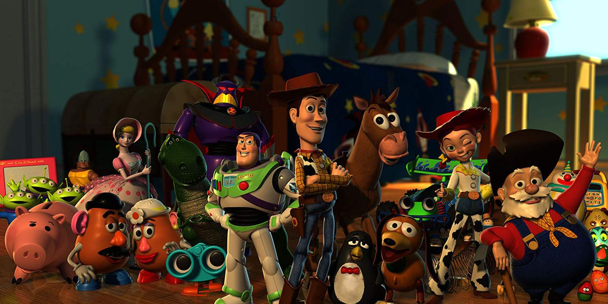

Sinopsis & Review Film Animasi Toy Story 1 s/d 4.

Toy Story adalah sebuah film animasi komputer yang dirilis pada tahun 1995. Film ini dibuat oleh Pixar Animation Studios dan didistribusikan oleh Walt Disney Pictures. Menceritakan tentang sekelompok mainan yang hidup dan berinteraksi dengan satu sama lain ketika anak-anak mereka tidak ada. Film ini merupakan film animasi pertama yang dibuat dengan teknik rendering komputer yang canggih. Menjadi film animasi yang sangat populer dan meraih banyak penghargaan, yang memiliki 4 sequel.
- TOY STORY 1
- DAFTAR KARAKTER UTAMA:
- "Woody"
- Yang dimainkan oleh Tom Hanks
- "Buzz Lightyear"
- Yang dimainkan oleh Tim Allen
- "Mister Potato Head"
- Yang dimainkan oleh Don Rickles
- "Misses Potato Head"
- Yang dimainkan oleh Estelle Harris
- "Slinky Dog"
- Yang dimainkan oleh Jim Varney
- "Rex"
- Yang dimainkan oleh Wallace Shawn
- "Hamm"
- Yang dimainkan oleh John Ratzenberger
- "Bo Peep"
- Yang dimainkan oleh Annie Potts
- "Sarge"
- Yang dimainkan oleh R.Lee Ermey
- "Andy Davis"
- Yang dimainkan oleh John Morris
- "Molly Davis"
- Yang dimainkan oleh Hannah Unkrich
- "Ibu Andy"
- Yang dimainkan oleh Laurie Metcalf
- "Sid Phillips"
- Yang dimainkan oleh Erik von Detten
- "Hannah Phillips"
- Yang dimainkan oleh Sarah Freeman
- TOY STORY 2
- DAFTAR KARAKTER UTAMA:
- "Woody"
- Yang dimainkan oleh Tom Hanks
- "Buzz Lightyear"
- Yang dimainkan oleh Tim Allen
- "Jessie"
- Yang dimainkan oleh Joan Cusack
- "Al McWhiggin"
- Yang dimainkan oleh Wayne Knight
- "Stinky Pete"
- Yang dimainkan oleh Kelsey Grammer
- "Mr. Potato Head"
- Yang dimainkan oleh Don Rickles
- "Slinky Dog"
- Yang dimainkan oleh Jim Varney
- "Rex"
- Yang dimainkan oleh Wallace Shawn
- "Hamm"
- Yang dimainkan oleh John Ratzenberger
- "Bo Peep"
- Yang dimainkan oleh Annie Potts
- "Sarge"
- Yang dimainkan oleh R.Lee Ermey
- "Bullseye dan Buster"
- Yang dimainkan oleh Frank Welker
- "Andy Davis"
- Yang dimainkan oleh John Morris
- TOY STORY 3
- DAFTAR KARAKTER UTAMA:
- "Woody"
- Yang dimainkan oleh Tom Hanks
- "Buzz Lightyear"
- Yang dimainkan oleh Tim Allen
- "Jessie"
- Yang dimainkan oleh Joan Cusack
- "Lots-o'-Huggin' Bear"
- Yang dimainkan oleh Ned Beatty
- "Little Green Men"
- Yang dimainkan oleh Jeff Pidgeon
- "Ken"
- Yang dimainkan oleh Michael Keaton
- "Barbie"
- Yang dimainkan oleh Jodie Benson
- "Bonnie Anderson"
- Yang dimainkan oleh Emily Hahn
- "Mr. Potato Head"
- Yang dimainkan oleh Don Rickles
- "Slinky Dog"
- Yang dimainkan oleh Blake Clark
- "Rex"
- Yang dimainkan oleh Wallace Shawn
- "Hamm"
- Yang dimainkan oleh John Ratzenberger
- "Mister Pricklepants"
- Yang dimainkan oleh Timothy Dalton
- "Trixie"
- Yang dimainkan oleh Kristen Schaal
- "Dolly"
- Yang dimainkan oleh Bonnie Hunt
- "Andy Davis"
- Yang dimainkan oleh John Morris
- TOY STORY 4
- DAFTAR KARAKTER UTAMA:
- "Woody"
- Yang dimainkan oleh Tom Hanks
- "Buzz Lightyear"
- Yang dimainkan oleh Tim Allen
- "Jessie"
- Yang dimainkan oleh Joan Cusack
- "Bo Peep"
- Yang dimainkan oleh Annie Potts
- "Little Green Men"
- Yang dimainkan oleh Jeff Pidgeon
- "Forky"
- Yang dimainkan oleh Tony Hale
- "Ducky"
- Yang dimainkan oleh Keegan-Michael Key
- "Bunny"
- Yang dimainkan oleh Jordan Peele
- "Duke Caboom"
- Yang dimainkan oleh Keanu Reeves
- "Giggle McDimples"
- Yang dimainkan oleh Ally Maki
- "Bonnie Anderson"
- Yang dimainkan oleh Madeleine McGraw
- "Mister Anderson"
- Yang dimainkan oleh Jay Hernandez
- "Misses Anderson"
- Yang dimainkan oleh Lori Alan
- Yang dimainkan oleh Don Rickles
- "Slinky Dog"
- Yang dimainkan oleh Blake Clark
- "Rex"
- Yang dimainkan oleh Wallace Shawn
- "Hamm"
- Yang dimainkan oleh John Ratzenberger
- "Mister Pricklepants"
- Yang dimainkan oleh Timothy Dalton
- "Trixie"
- Yang dimainkan oleh Kristen Schaal
- "Dolly"
- Yang dimainkan oleh Bonnie Hunt
- "Andy Davis"
- Yang dimainkan oleh John Morris
| Deskripsi Film | |
|---|---|

|
RILIS: 22 November 1995 |
| DURASI: 1 Jam 21 Menit | |
| GENRE: Komedi/Fantasi | |
| AGE: 9+ | |
| SUTRADARA: John Lasseter | |
| PRODUSER: Bonnie Arnold,Ralph Guggenheim | |
| PERUSAHAAN PRODUKSI: Walt Disney Pictures | |
| DISTRIBUTOR: Buena Vista Distribution | |
| BAHASA: Inggris | |
| RATING: 8.3/10 | |
Sinopsis
Plotnya dimulai ketika Andy menerima mainan baru, astronot modern dan canggih bernama Buzz Lightyear, di hari ulang tahunnya. Buzz, yang tidak mengetahui bahwa dia adalah mainan, percaya bahwa dia adalah penjaga ruang angkasa yang sebenarnya dan ini membuat Woody cemburu. Kedua mainan tersebut memulai serangkaian petualangan saat mereka mencoba kembali ke rumah setelah secara tidak sengaja ditinggalkan oleh Andy di sebuah restoran cepat saji. Sepanjang film, Woody dan Buzz mengatasi perbedaan mereka dan mengembangkan persahabatan saat mereka bekerja sama untuk mendapatkan kembali Andy sebelum dia dan keluarganya pindah ke rumah baru. Pada klimaks film tersebut, Woody dan Buzz menghadapi beberapa tantangan, termasuk antagonisme dari mainan lain bernama Sid Phillips, seorang anak tetangga yang senang membongkar dan membangun kembali mainan. Pada akhirnya, Woody dan Buzz berhasil kembali menemui Andy tepat pada waktunya. Woody memutuskan bahwa menjadi mainan favorit Andy lebih penting daripada menjadi pusat perhatian dan menerima Buzz sebagai teman yang sama pentingnya. Film ini diakhiri dengan semua mainan Andy bekerja sama secara harmonis, siap untuk menjalani petualangan baru. "Toy Story" adalah film yang merayakan persahabatan, kesetiaan, dan pentingnya menerima orang lain apa adanya.
| Deskripsi Film | |
|---|---|

|
RILIS: 24 November 1999 |
| DURASI: 92 Menit | |
| GENRE: Komedi/Fantasi | |
| AGE: 9+ | |
| SUTRADARA: John Lasseter,Ash Brannon,Lee Unkrich | |
| PRODUSER: Helene Plotkin,Karen Robert Jackson | |
| PERUSAHAAN PRODUKSI: Walt Disney Pictures | |
| DISTRIBUTOR: Buena Vista Distribution | |
| BAHASA: Inggris | |
| RATING: 7.9/10 | |
Sinopsis
Andy, anak kecil pemilik mainan Toy Story, pergi ke perkemahan. Woody, si koboi, dalam kondisi buruk dengan lengan robek, dan tertinggal. Hal ini sangat menyedihkan bagi Woody, namun yang lebih buruk akan terjadi, ketika dia ditangkap di garage sale oleh Big Al, sang kolektor mainan, diperbaiki, diperbaiki, dan dicat ulang--dan dijadwalkan untuk dijual ke museum mainan di Jepang. Pada awalnya petualangan ini menyenangkan bagi Woody, yang untuk pertama kalinya mengetahui bahwa ia adalah bagian dari sekumpulan mainan, Roundup Gang, yang juga mencakup seorang cowgirl bernama Jessie, seekor kuda bernama Bullseye, dan seorang pencari emas bernama Stinky Pete. Woody terpesona saat mengetahui bahwa dia bahkan membintangi acara boneka TV hitam-putih di tahun 50-an, dan mulai berpikir bahwa karena Andy pada akhirnya akan meninggalkannya, dia mungkin menikmati pensiun sebagai bintang atraksi di museum mainan. Sementara itu, Buzz Lightyear dan mainan lainnya mengetahui apa yang terjadi dan memimpin misi lintas kota yang berbahaya untuk menyelamatkan Woody. Dan kita mulai mendapatkan wawasan tentang kehidupan pribadi para mainan. Stinky Pete, misalnya, pahit karena belum ada anak yang membelinya, dan dia masih di dalam kotak aslinya. Jessie gagah dan bebas, tapi cowgirl ini benar-benar sedih, dia menyanyikan "When She Loved Me" yang menawan tentang mantan pemiliknya Emily, yang melemparkannya ke bawah tempat tidur dan melupakannya. "Kamu tidak pernah melupakan anak-anak, tetapi mereka melupakanmu,'' desah Buzz, tetapi dia berpendapat untuk posisi itu lebih baik dicintai sepanjang masa kanak-kanak daripada dikagumi selamanya di balik kaca museum.
| Deskripsi Film | |
|---|---|

|
RILIS: 18 Juni 2010 |
| DURASI: 103 Menit | |
| GENRE: Komedi/Fantasi | |
| AGE: 9+ | |
| SUTRADARA: Lee Unkrich | |
| PRODUSER: Darla K. Anderson, John Lasseter, Lee Unkrich | |
| PERUSAHAAN PRODUKSI: Pixar Animation Studios | |
| DISTRIBUTOR: Walt Disney Pictures | |
| BAHASA: Inggris | |
| RATING: 8.3/10 | |
Sinopsis
Mainan-mainan tersebut secara keliru dikirim ke pusat penitipan anak alih-alih ke loteng tepat sebelum Andy berangkat kuliah, dan Woody harus meyakinkan mainan-mainan lain bahwa mainan-mainan itu tidak ditinggalkan dan harus kembali ke rumah. Woody, Buzz dan seluruh geng kembali. Saat pemiliknya, Andy, bersiap berangkat ke perguruan tinggi, mainan setianya berakhir di tempat penitipan anak, tempat anak-anak liar dengan jari kelingkingnya yang lengket tidak bisa bermain dengan baik. Jadi, semuanya untuk satu dan satu untuk semua saat mereka bergabung dengan rekan Barbie, Ken, seekor landak bernama Mr. Pricklepants dan boneka beruang berwarna merah muda beraroma stroberi bernama Lots-o'-Huggin' Bear untuk merencanakan pelarian besar mereka. Saat Andy tercinta bersiap berangkat kuliah, Woody, Buzz Lightyear, Jessie, dan mainan lainnya menuju loteng tetapi secara tidak sengaja berakhir di tepi jalan bersama sampah. Pemikiran cepat Woody menyelamatkan geng tersebut, namun semuanya kecuali Woody akhirnya disumbangkan ke pusat penitipan anak. Sayangnya, anak-anak yang tidak bisa dikendalikan tidak bisa bermain dengan baik, jadi Woody dan kawan-kawan membuat rencana untuk melarikan diri. Dengan Andy yang berusia 17 tahun siap meninggalkan sarangnya dan melebarkan sayapnya setelah peristiwa Toy Story 2 (1999) , Woody dan geng mainan merasakan waktu untuk perpisahan yang sulit sudah dekat. Setidaknya, tinggal di loteng lebih baik daripada tidak sama sekali. Sebaliknya, saat pemuda tersebut berangkat ke perguruan tinggi, momen pengalih perhatian mengirim seluruh koleksinya ke Pusat Penitipan Anak Sunnyside yang menjanjikan: tempat penuh warna di mana mainan yang dulu dipuja mendapatkan kesempatan kedua untuk jatuh cinta. Tapi ada lebih banyak hal di surga lokal daripada yang terlihat. Dan saat mainan Andy yang terdampar menemukan sisi gelap, Buzz dan teman-temannya harus mengumpulkan seluruh keberanian untuk bisa melarikan diri. Namun pertanyaannya adalah apakah keadaan akan sama lagi? Ketika sekelompok mainan tersebut secara keliru disumbangkan ke pusat penitipan anak, mereka melakukan apa pun yang bisa mereka lakukan untuk mengembalikan mainan tersebut ke rumah kepada pemilik sahnya yang akan berangkat kuliah. Namun, pusat penitipan anak tersebut dijalankan oleh boneka beruang yang memiliki masa lalu yang mengerikan.
| Deskripsi Film | |
|---|---|

|
RILIS: 21 Juni 2019 |
| DURASI: 100 Menit | |
| GENRE: Komedi/Fantasi | |
| AGE: 9+ | |
| SUTRADARA: Josh Cooley | |
| PRODUSER: Jonas Rivera,Mark Nielsen, Lee Unkrich | |
| PERUSAHAAN PRODUKSI: Walt Disney Pictures, Pixar Animation Studios | |
| DISTRIBUTOR: Walt Disney Pictures, Motion Pictures | |
| BAHASA: Inggris | |
| RATING: 7.7/10 | |
Sinopsis
Mengisahkan tentang Woody dan kelompoknya kini sudah bersama dengan pemilik barunya, Bonnie, setelah Andy yang sudah dewasa harus melanjutkan kuliahnya di luar kota. Woody membantu Bonnie yang mengalami usaha saat baru masuk TK. Berkat bantuan Woody, Bonnie berhasil melewatinya. Woody membantu Bonnie dengan skor masuk tas Bonnie yang pada saat itu sedang ada tugas prakarya kelas. Bonnie berhasil membuat mainan baru bernama Forky, namun Forky menganggap dirinya tidak layak disebut mainan. Forky mencoba untuk pergi tapi selalu gagal karena dicegah mainan lain. Namun, pada saat Bonnie akan pergi berlibur Forky berhasil kabur. Woody berusaha menahannya namun malah ikut terjebak dalam petualangan bersama. Selama perjalanan, Forky menceritakan bagaimana ia tak pantas disebut sebagai mainan.
"Mr. Potato Head"